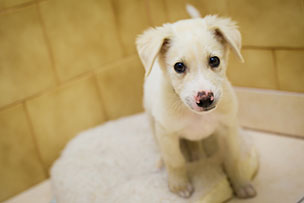
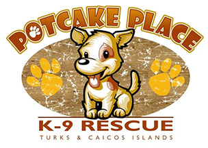

Potcake is the name given to the dogs of the Bahamas and the Turks and Caicos Islands. It came about because the locals fed the caked remains of the cooking pot to the dogs. As generations have passed, Potcakes have evolved into a breed which is extremely smart, loyal and loving.
Potcakes are rescued from around the islands of the Turks and Caicos. Litters of puppies as well as individual pups are found wandering without their littermates. They may be found by tourists while they are out exploring, or locals in their backyard or while working on construction sites.
Potcakes can range between 35lb and 75 lb, but most grow to be approximately 45 lbs, the size of their paws as a puppy gives you a good idea as to how large they will grow.
Once puppies have been fostered and are healthy, they are put up for adoption.
You can adopt a Potcake and join the growing number of people in the U.S. and Canada giving these fantastic loyal pets a much needed loving home. You can save a life and make a difference in the future of one dog, of your own family, and of the Turks and Caicos Islands.
If you would like to see photos of some of the puppies currently up for adoption click here.
Help today to get a Potcake into a wonderful forever home. Every pup rescued is one less dying needlessly of neglect, abuse, disease, starvation or euthanization.
Many potcakes end up on the street without proper care and love.
Donate today to help save potcakes and give them a safe forever home!
You can volunteer to take these abandoned puppies into your home and foster them for 2-3 weeks until they find a forever home somewhere safe.
Once the puppies find a home they need to get there!
Puppies can't fly on their own, so you can volunteer to take puppies on flights out of Providenciales. If you are flying to the US or Canada then you can help! Just Click Here!
By simply carrying a soft sided bag on to the plane, you can save a life and make a difference. Volunteers are always needed to carry pups to their new owners.

visit www.potcakeplace.com for more detailed information
